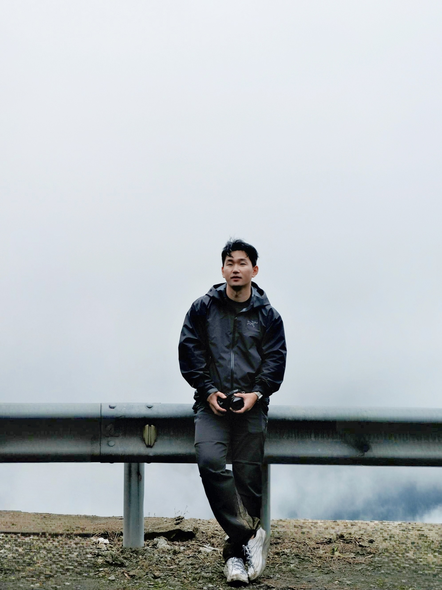

Taizijian · 2026
Into
the Mist
雾中太子尖Project 01
雾中，光让道路
短暂地显现。
一次穿过太子尖浓雾的记录。夜色、车灯与行人的身影彼此交叠；天亮后，道路继续消失在山林之中。



About
Eric
Independent photographer drawn to mountain weather, unfamiliar roads and the quiet tension between people and landscape.